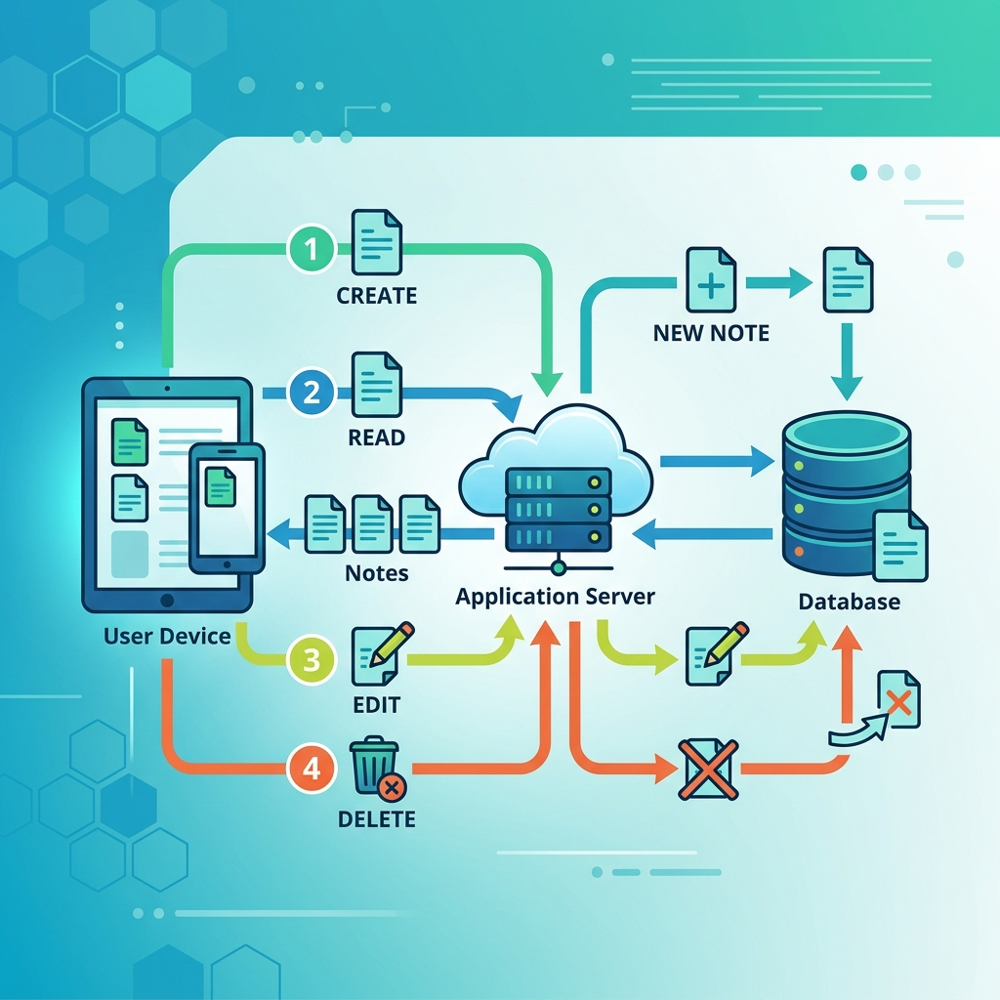

【Engineer Skill Lab】
API設計ワークショップ
メモ・ノートAPIをRESTで設計する
〜メソッド・パス・ステータスとヘッダー編〜
シナリオの前提
- 対象： 社内用のシンプルなメモアプリ（新規開発）
- 利用者： ログイン済み
- 操作： メモのCRUD（Create, Read, Update, Delete）
- リソース：
/notes (名詞の複数形を使う)
CRUDとAPIの全体像

作る(POST)・読む(GET)・直す(PUT/PATCH)・消す(DELETE)
一覧取得 GET /notes
- ステータス： 200 OK
- ヘッダー：
Authorization
(Bearerトークンなど)Accept: application/json
- リクエスト本文はなし
新規作成 POST /notes
- ステータス： 201 Created
- ヘッダー：
AuthorizationContent-Type: application/json
- リクエストとレスポンスの両方に本文あり
更新 PUT or PATCH /notes/{id}
- PUT： 1件を全文置き換えで更新
- PATCH： 一部だけ（部分）更新
- ステータス： 200 OK (更新後のJSONを返すことが多い)
- 必須ヘッダー：
AuthorizationContent-Type: application/json
削除 DELETE /notes/{id}
- ステータス： 204 No Content
(本文なしの定番)
- ※200 OKでJSONを返す別解もある
- ヘッダー：
Authorization のみ
- 本文がないのでContent-Typeは不要
重要なHTTPヘッダーまとめ
| ヘッダー名 |
用途 |
よく使われる時 |
| Accept |
受け取りたい表現（JSONなど）を指定 |
GET（読み取り時） |
| Content-Type |
送る本文の形式（JSONなど）を指定 |
POST, PUT, PATCH（書き込み時） |
| Authorization |
本人確認や認証情報（Bearerトークン） |
保護されたすべてのアクション |
おつかれさまなのだ！
API設計も、パズルのようにメソッドと
ヘッダーとステータスコードを組み立てる！
高評価・チャンネル登録よろしくなのだ！